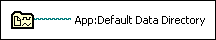

Default Data Directory VI
Owning Palette: File Constants
Requires: Base Development System
Returns the directory you configure to store the data a VI or function generates.
You can set the default data directory in the Options dialog box.

 Add to the block diagram Add to the block diagram |
 Find on the palette Find on the palette |